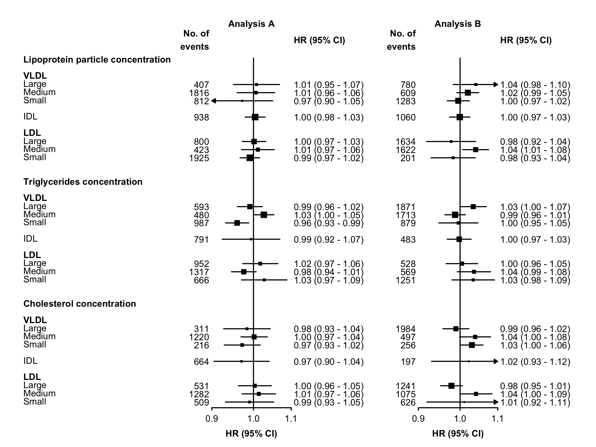

ckbplotr provides functions to help create and style plots in R. It is being developed by, and primarily for, China Kadoorie Biobank researchers.
This package is under development. If you find an error or bug or have a suggestion for improvement please create an issue on GitHub or contact the author at neil.wright@ndph.ox.ac.uk, @NeilStats, or @NeilStats@fediscience.org.
It can be used to: create plots of estimates and CIs against risk factor levels… 
…create forest plots… 
…and convert other ggplots to CKB style. 
Key features
Functions that create plots (such as shape_plot() and forest_plot()) return both:
- A ggplot2 plot. This allows users to further manipulate the plot using ggplot2 code, such as
+ theme()to customise the plot. - The ggplot2 code used to create the plot. This allows uses to see exactly how the plot has been created, and adapt the code for other uses. (In RStudio the code will also be shown in the Viewer pane.)
Installation
From R-universe
The latest version of ckbplotr can be installed from the neilstats R-universe using install.packages().
install.packages('ckbplotr',
repos = c('https://neilstats.r-universe.dev', 'https://cloud.r-project.org'))This will also install dependencies from the CRAN repository.
From github
The latest version of ckbplotr can also be installed from github using the remotes package.
install.packages('remotes')
remotes::install_github('neilstats/ckbplotr')Get started
Read vignette("ckbplotr") to see how to use the shape_plot(), forest_plot(), and plot_like_ckb() functions.